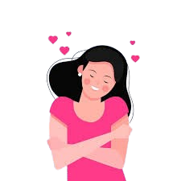

Dr Tirta
Hubungi spesialis kami, lebih dari 100000 orang terbantu setelah konsultasi dengan dr Tirta
Contact UsCara agar bahagia?
Temukan beberapa tips untuk menemukan ketenangan hati
Karna kami akan selalu mendengarkan suara lirih darimu

Hubungi spesialis kami, lebih dari 100000 orang terbantu setelah konsultasi dengan dr Tirta
Contact UsTemukan beberapa tips untuk menemukan ketenangan hati
Temukan Artikel Terkait Kesehatan Mental
Temukan berbagai cara untuk mencintai diri anda sendiri dimulai dengan senyuman kecil hari ini
hereTemukan komunitas di mana anda dapat menyuarakan perasaan anda dan berbagi pengalaman dengan orang lain, ingat kamu tidak sendiri
hereTemukan berbagai artikel tentang kesehatan mental dan cara mengatasinya agar kamu bisa lebih mengerti diri mu sendiri
herelove yourself, because no one really knows about you except yourself

1. Tarik napas pelan, beri ruang untuk dirimu sendiri Kadang dunia terasa bising dan langkahmu berat. Tak apa jika hari ini kamu melambat; biarkan pikiranmu beristirahat sejenak. Setiap tarikan napas yang tenang adalah pelukan kecil untuk hati—pengingat bahwa kamu masih di sini, masih bertahan.
2. Nilai dirimu tak ditentukan oleh seberapa cepat kamu berlari Kelelahan bukan tanda lemah, melainkan sinyal tubuh dan jiwa agar kamu berhenti sejenak, menyesap kehangatan, lalu melangkah lagi saat siap. Ingat: keberanian bukan hanya maju terus, tetapi juga berani berhenti demi menjaga diri.
3. Menjaga pikiran adalah merawat raga Saat beban rasa dipeluk dengan kehadiran yang lembut—tidur jadi lebih nyenyak, napas lebih lapang, dan tubuh pun perlahan pulih. Berikan dirimu kata-kata baik hari ini; tubuhmu akan menjawab dengan energi baru esok pagi.
4. Kamu tidak sendiri—selalu ada tangan yang ingin menggenggam Saat hati terasa sunyi, buka ruang untuk cerita. Entah pada sahabat, keluarga, atau profesional, berbagi beban membuat langkah terasa lebih ringan. Percayalah, ada banyak hati di luar sana yang bersedia mendengar dan menemanimu sampai badai reda.
Tak apa menjaga jarak dari hal atau orang yang membuatmu tidak nyaman. Belajar berkata *tidak* bukan berarti kamu egois—itu adalah bentuk kasih sayang untuk dirimu sendiri. 🌱 Kadang, menjauh adalah cara terbaik untuk tetap bertahan dan sembuh.
Tidak semua hal bisa kamu kendalikan—termasuk komentar dari orang lain. Tapi kamu bisa memilih untuk tidak menyerap semuanya ke dalam hatimu. 🌸 Lepaskan beban yang bukan milikmu, dan biarkan hatimu tetap tenang.
Kamu nggak harus selalu kuat setiap waktu. Istirahatlah sejenak… tarik napas dalam, dan izinkan hatimu pulih perlahan.
Saat segalanya terasa berat, wajar kalau kamu jadi lebih sensitif atau mudah tersulut emosi. Tapi ingat, itu bukan berarti kamu lemah atau buruk. Pikiranmu hanya sedang lelah—terlalu banyak yang kamu pendam sendiri. Coba tarik napas perlahan, beri ruang untuk dirimu sendiri. Fokuslah pada hal-hal yang bisa kamu kendalikan, dan lepaskan yang berada di luar jangkauanmu. Kamu berhak untuk tenang. Kamu pantas untuk merasa damai.
Terkadang, saat hidup terasa begitu berat, kita butuh tempat bernaung— sebuah pelarian kecil yang memberi ruang untuk bernapas. Entah itu lewat bermain game, menulis, mendengarkan musik, atau sekadar diam sejenak.
Mulailah dari hal sederhana. Langkahkan kaki di pagi hari, rasakan hangatnya matahari, bergerak perlahan melalui olahraga, atau temukan komunitas yang membuatmu merasa pulang.
{kind=link}
{kind=link}
%3Astrip_icc()%3Aformat(webp)%2Fkly-media-production%2Fmedias%2F3481831%2Foriginal%2F069137300_1623654786-5498791.jpg&imgrefurl=https%3A%2F%2Fwww.bola.com%2Fragam%2Fread%2F4581405%2F40-kata-kata-bijak-keren-tentang-solidaritas-pengingat-betapa-pentingnya-menjaga-kebersamaan&docid=hVIfd_z_9i6R9M&tbnid=ngOaNL6nnuAlcM&vet=12ahUKEwiGyvKAkb6NAxVT7zgGHb9aOpoQM3oECEEQAA..i&w=800&h=450&hcb=2&ved=2ahUKEwiGyvKAkb6NAxVT7zgGHb9aOpoQM3oECEEQAA){kind=link}